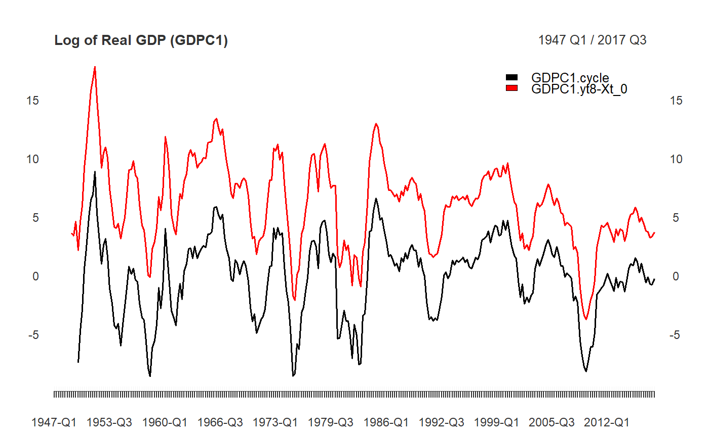

yth_filter returns an xts zoo indexed original, trend, cycle, and "random walk" series.
yth_filter(x, h = 8, p = 4, ...)
| x | A univariate xts series of zoo index class, such as |
|---|---|
| h | An |
| p | An |
| ... | other arguments passed to the function |
yth_filter returns an xts object containing four time series.
They include the original series, model fitted values (trend component), model residuals (cycle component),
and a "random walk" series represented by differencing \(y_{t+h}\) and \(y_t\).
For time series of quarterly periodicity, Hamilton suggests parameters of h = 8 and p = 4, or an \(AR(4)\) process, additionally lagged by \(8\) lookahead periods. Econometricians may explore variations of h. However, p is designed to correspond with the seasonality of a given periodicity and should be matched accordingly. $$y_{t+h} = \beta_0 + \beta_1 y_t + \beta_2 y_{t-1} + \beta_3 y_{t-2} + \beta_4 y_{t-3} + v_{t+h}$$ $$\hat{v}_{t+h} = y_{t+h} - \hat{\beta}_0 + \hat{\beta}_1 y_t + \hat{\beta}_2 y_{t-1} + \hat{\beta}_3 y_{t-2} + \hat{\beta}_4 y_{t-3}$$ Which can be rewritten as: $$y_{t} = \beta_0 + \beta_1 y_{t-8} + \beta_2 y_{t-9} + \beta_3 y_{t-10} + \beta_4 y_{t-11} + v_{t}$$ $$\hat{v}_{t} = y_{t} - \hat{\beta}_0 + \hat{\beta}_1 y_{t-8} + \hat{\beta}_2 y_{t-9} + \hat{\beta}_3 y_{t-10} + \hat{\beta}_4 y_{t-11}$$
James D. Hamilton. Why You Should Never Use the Hodrick-Prescott Filter. NBER Working Paper No. 23429, Issued in May 2017.
data(GDPC1) l_GDPC1 <- 100*log(GDPC1) GDPC1_filter <- yth_filter(l_GDPC1, h = 8, p = 4) tail(GDPC1_filter, 8)#> GDPC1 GDPC1.trend GDPC1.cycle GDPC1.yt8-Xt_0 #> 2015 Q4 971.3998 971.0746 0.32512275 4.661666 #> 2016 Q1 971.5444 970.4246 1.11980556 5.036787 #> 2016 Q2 972.0977 971.9094 0.18831943 4.465194 #> 2016 Q3 972.7833 973.3109 -0.52760922 3.880684 #> 2016 Q4 973.2190 973.2501 -0.03104638 3.817619 #> 2017 Q1 973.5261 974.1597 -0.63363121 3.327926 #> 2017 Q2 974.2795 974.9659 -0.68630695 3.405300 #> 2017 Q3 975.0563 975.2427 -0.18635065 3.777707main <- "Log of Real GDP (GDPC1)" plot(GDPC1_filter[,3:4], grid.col = "white", legend.loc = "topright", main = main)